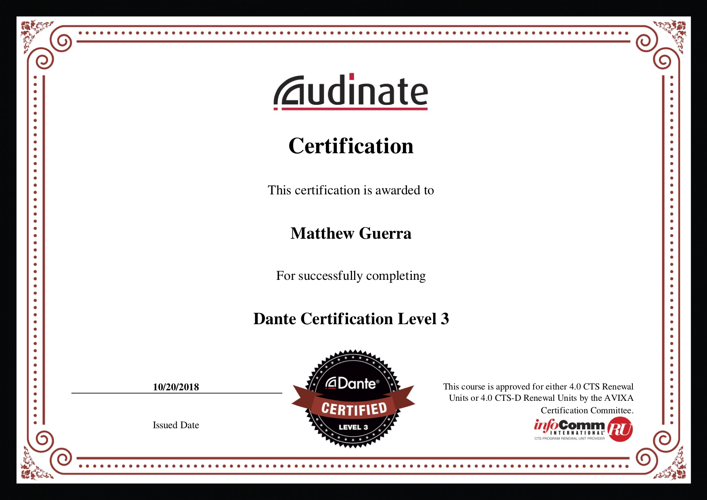

Production
Lighting
I have experience with ETC and High End (HOG) lighting systems. I have been a lighting designer for Grace Baptist Church. My work has been used during the Student Ministries Recall Conference and Youth Group Services. I have rigged lights using moving truss systems and have worked with visualization software, Capture and Vectorworks (Vision).
Sound
I have experience mixing in Worship, concert and outdoor environments. I have used Yamaha PM, QL and CL consoles along with Allen and Heath consoles. I have installed audio systems along with Audinate's Dante Sound Controller software and I have a Level 1, 2, and 3 certification in Dante. I have experience with using Pro Tools and Waves (Tracks Live) for recording, live mixing, and post-production.
Construction
I have experience building and repairing sets and stage pieces. I was a part of a team that created a light house and pirate ship for the Grace Baptist Church Summer Adventure (VBS). I also helped to restore choir risers and work to repair, refinish and paint them for use in the Grace Baptist Church Worship Center.